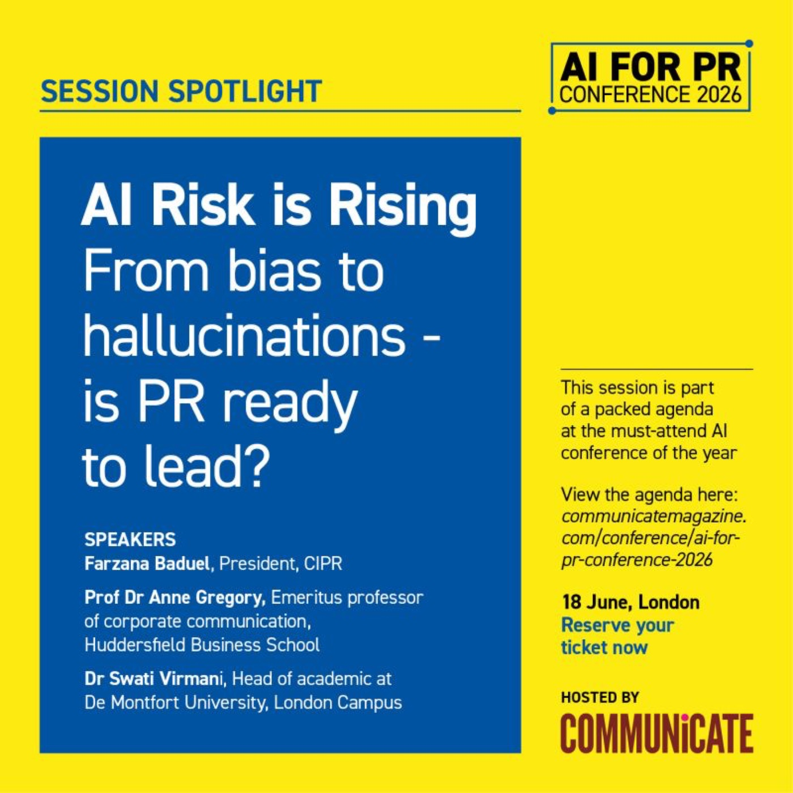
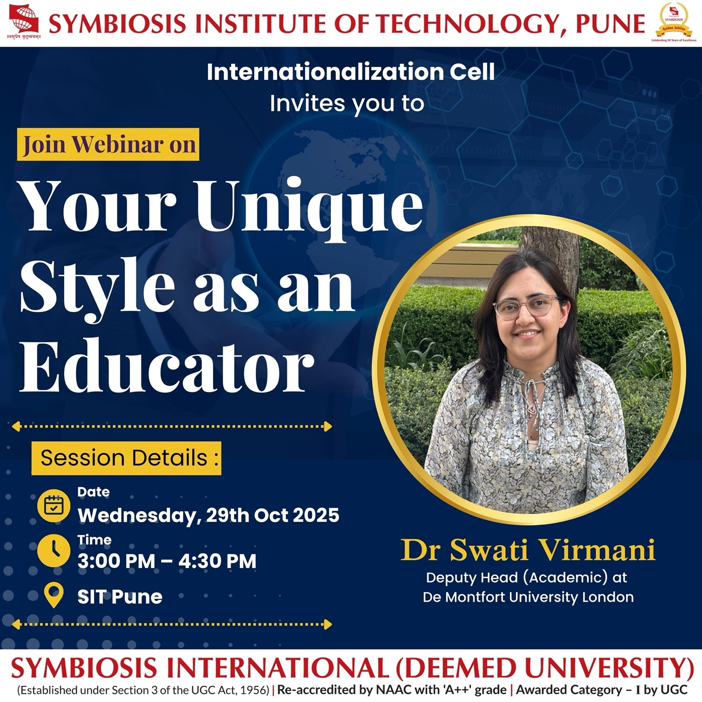
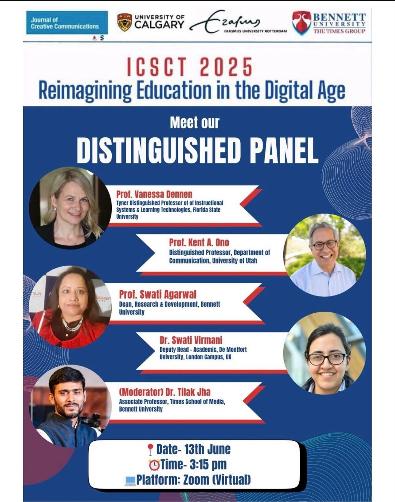
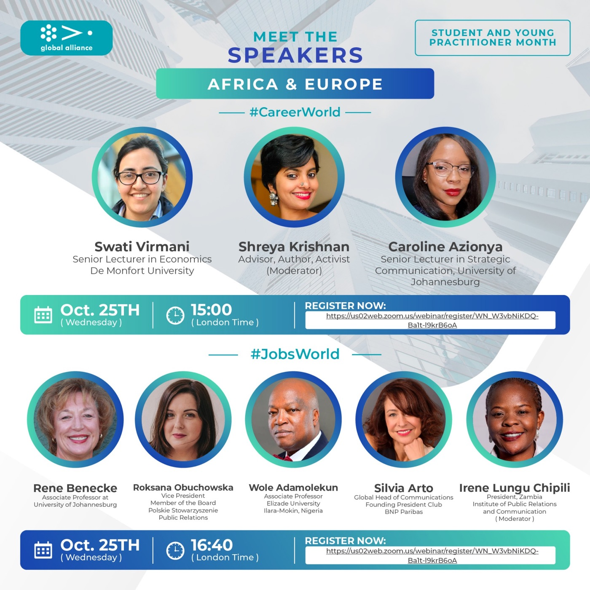
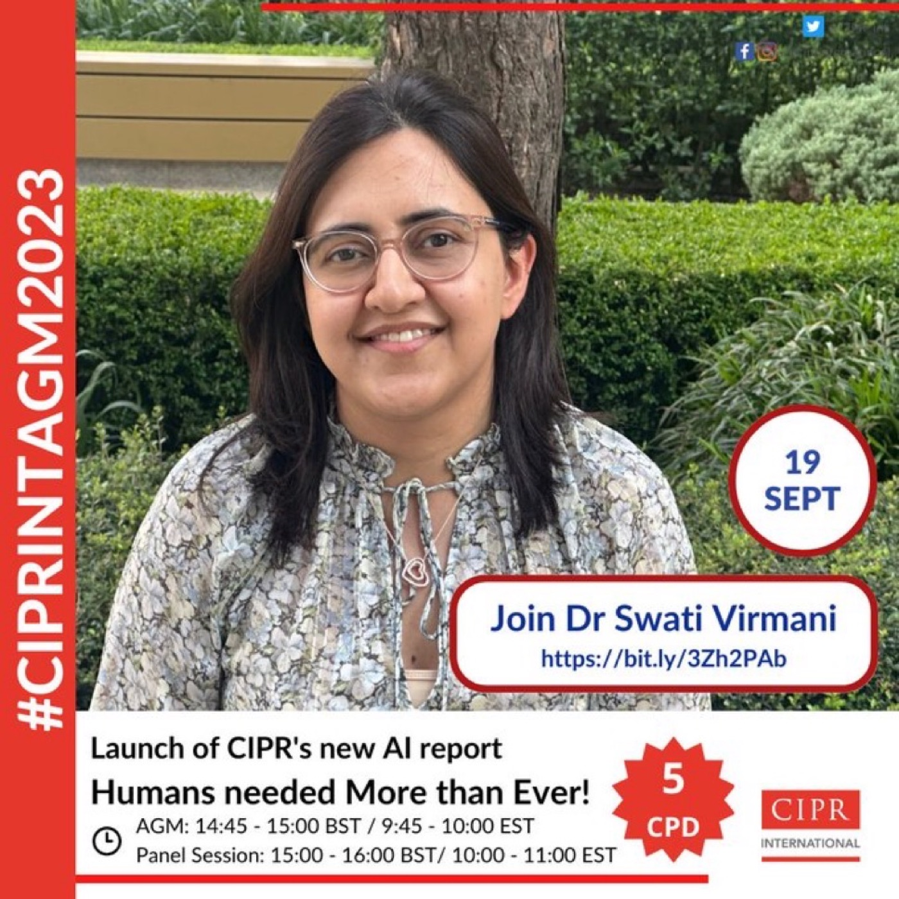
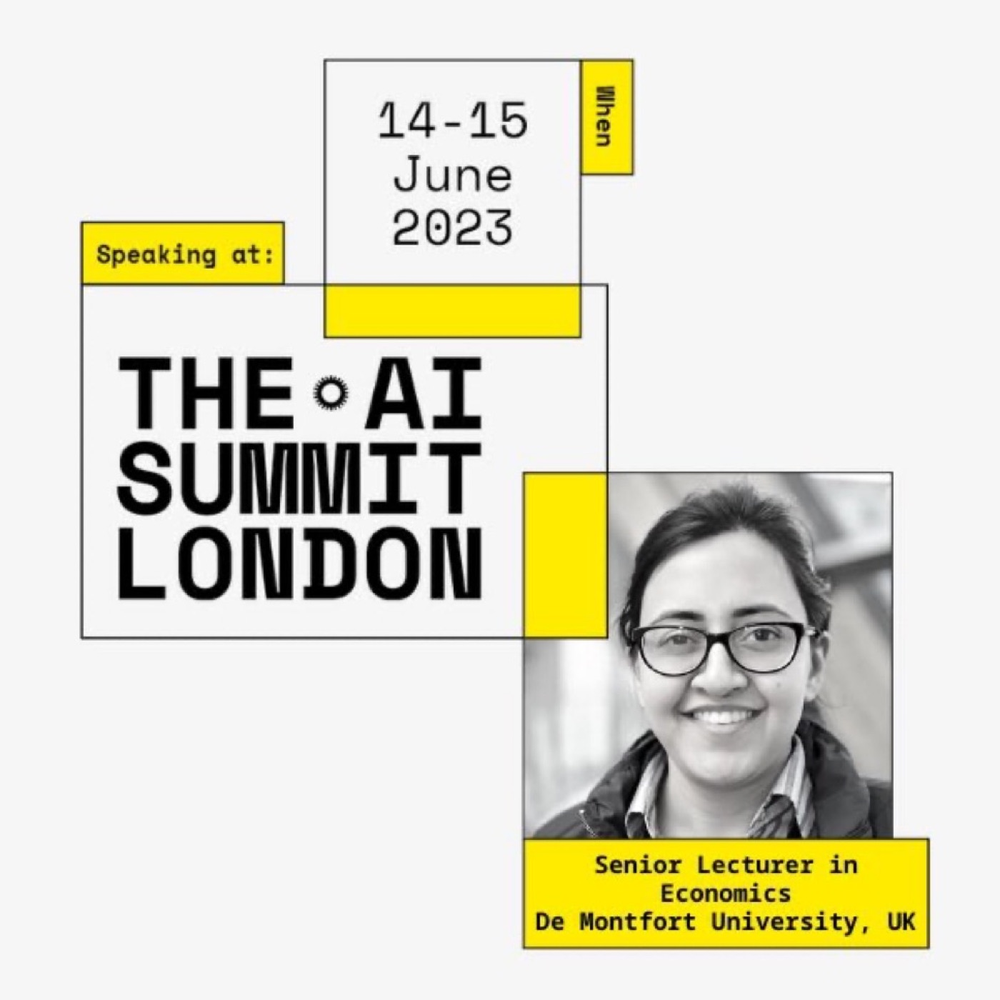
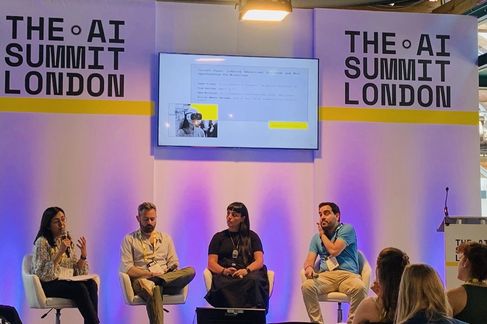

AI and the future of PR and comms
A conversation about the technological advances seen in AI since the launch of ChatGPT in 2022, and what they mean for the future of PR and communications teams.
Listen on the CIPR siteI write and speak for academic, professional and public audiences, with a particular interest in making complex debates around AI accessible, ethical and practically useful — across conferences, webinars, expert panels and institutional events.
Themes include AI in education, AI governance, inclusive digital futures, mental health literacy, professional readiness and the changing role of educators in the digital age.
CIPR & CISION
AI for PR Conference 2026 · Communicate Magazine (Cravenhill Publishing), supported by CIPR and PRCA · London
Panel with Farzana Baduel (President, CIPR) and Prof Dr Anne Gregory (Emeritus Professor of Corporate Communication, Huddersfield Business School), on AI risk from bias to hallucinations.
Symbiosis Institute of Technology, Pune · Internationalization Cell, Symbiosis International (Deemed University)
UCL and the Royal Economic Society
ICSCT 2025 · Online
Convened by the Journal of Creative Communications with the University of Calgary, Erasmus University Rotterdam and Bennett University. Panel alongside Prof Vanessa Dennen (Florida State University), Prof Kent A. Ono (University of Utah) and Prof Swati Agarwal (Bennett University).
Government Economic Service, HM Treasury
Delivered to a membership of more than 3,500 economists across UK government departments.
Institute for Public Relations, United States
Seminar with HR consultancies involved in Europe‑wide recruitment of practitioners
Global Alliance for Public Relations and Communication Management · Student and Young Practitioner Month
Panel with Caroline Azionya (University of Johannesburg), moderated by Shreya Krishnan.
CIPR International Annual General Meeting 2023
Launch and panel session for the CIPR’s report on the use of AI in public relations and its impact on PR work. See the report →
The AI Summit London 2023 · Industries Stage, London
Panel with Lara Mainfiori (Senior Director of Workforce Economics, Multiverse), Rodrigo Marcos Carvajal (Head of Data and AI, easyJet) and Ryan Callihan.
Launch of the CIPR research at The Alan Turing Institute







Writing on generative AI, assessment, playful learning, online education and professional development — for academic and professional audiences. I also use visual and creative methods, including sketch‑noting, to communicate ideas in ways that are engaging, inclusive and reflective.
Staff and Educational Development Association
Economics Network
Economics Network
JISC
De Montfort University research archive
Association for Learning Technology
Economics Network
A conversation about the technological advances seen in AI since the launch of ChatGPT in 2022, and what they mean for the future of PR and communications teams.
Listen on the CIPR siteOn the importance of CPD, the link between staff wellbeing and CPD, and the impact technology might have on the future of professional development.
Listen to the JISC podcastA conversation with our community reporters about what a smart city looks like, the social challenges that come with technology and AI, and the ethical issues around them.
Listen to the discussionI take keynote, panel and workshop invitations on responsible AI, AI governance, AI literacy in education, digital inclusion and the future of professional work — for conferences, institutional events, professional bodies and public‑sector programmes.